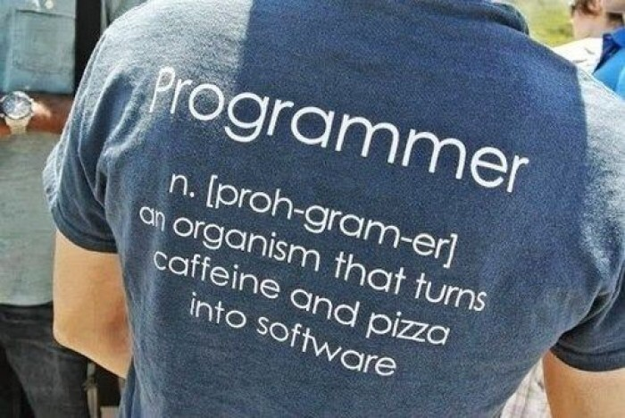

Click image for a song I personally love

Nowadays, I am an NYU student with a major in Computer Science and a minor in Web Programming and Applications . I am not really sure what career or type of job I am looking for, but I am doing my best to explore my options. I will probably go to grad school for computer science. For now, I am just enjoying the ride.
I love listening to MUSIC; honestly I don't know how I could have lived my
life until now without it. When I was younger, my dad would always play disco music around
the house when I was younger, while my mom would work with the spanish jams in the kitchen.
I love listening to the radio in the car and discovering new songs/artists on Spotify.
Click image for a song I personally love